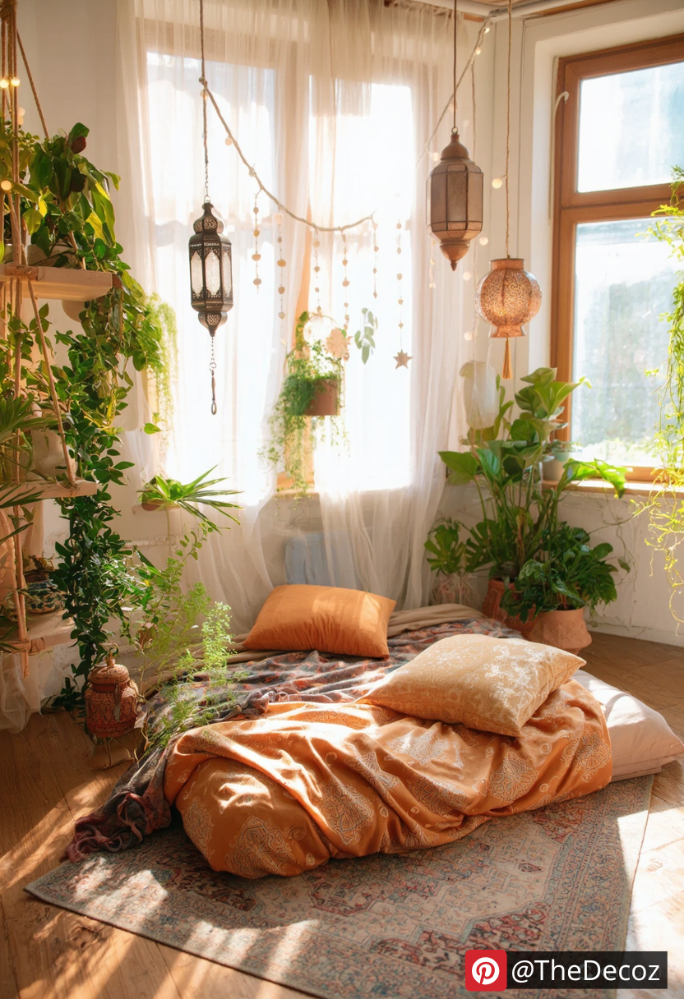
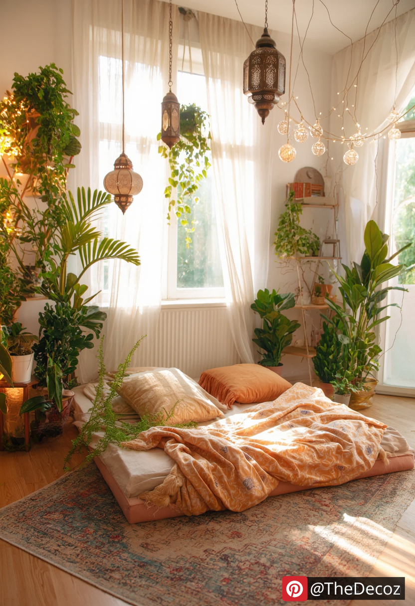
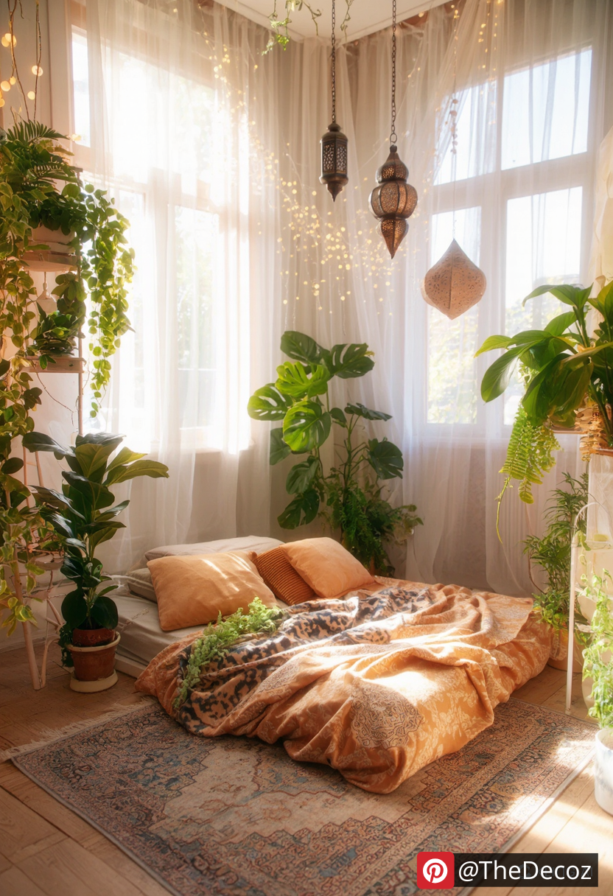
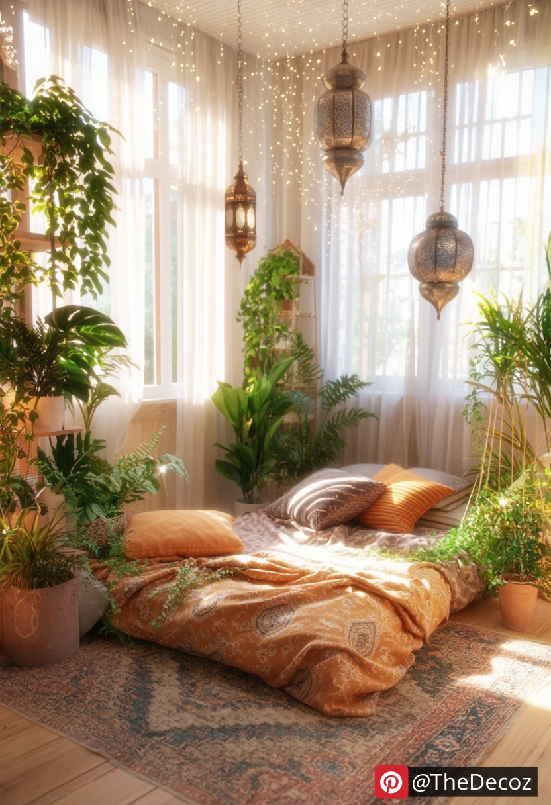
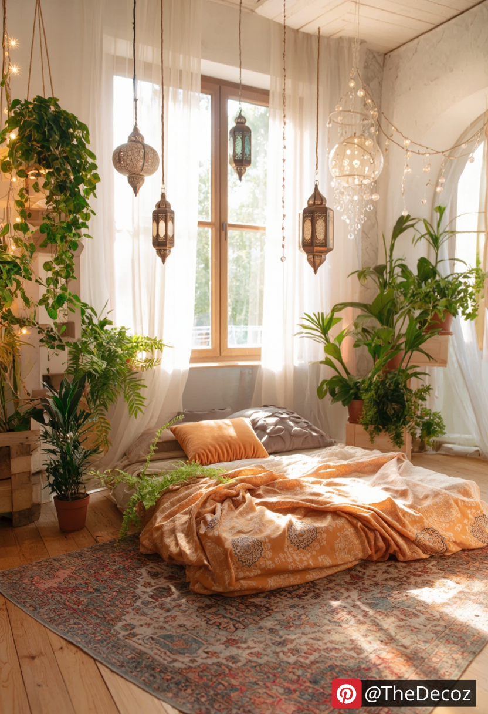

Creating a boho bedroom isn’t just about adding colorful textiles and eclectic decor; lighting plays a crucial role in setting the mood and enhancing the aesthetic. The right lighting can transform a plain room into a cozy, inviting sanctuary filled with warmth and character. In this article, we’ll explore innovative room decor boho bedroom lighting ideas that will inspire you to brighten your space with creativity and flair.
Natural light is the foundation of any boho-inspired space. Use sheer, light-filtering curtains to let in as much sunlight as possible while maintaining privacy. Soft, diffused daylight enhances the earthy tones and textures typical of boho decor, creating a serene and airy ambiance.
Boho style thrives on layers—and lighting is no exception. Combine multiple light sources like string lights, lanterns, floor lamps, and candles to create depth and warmth. Mixing various lighting types not only provides functionality but also adds to the relaxed, bohemian feel.
Incorporate macrame pendant lights to add texture and a handcrafted touch to your room. These fixtures blend seamlessly with boho decor, offering both visual interest and soft, ambient light. Opt for natural fibers and neutral tones to keep the look cohesive.
Nothing says boho quite like delicate fairy lights draped around bed frames, mirrors, or along the walls. These tiny, twinkling lights create a magical atmosphere perfect for unwinding after a long day. Choose warm white bulbs for a soft, inviting glow.
Rattan and bamboo are quintessential materials in boho decor. Choose light fixtures made from these natural elements to add an earthy, organic feel to your bedroom. Whether it’s a statement chandelier or a simple bedside lamp, these materials bring texture and warmth.
Add a touch of global influence with intricately designed Moroccan lanterns. These lanterns cast beautiful patterns on your walls when lit, adding a layer of visual intrigue. Hang them in clusters or use them as floor accents for a truly bohemian vibe.
Edison bulbs with their exposed filaments provide a warm, nostalgic glow that complements boho decor perfectly. Use them in pendant lights or string them across the ceiling for an industrial-meets-bohemian aesthetic.
Candles are an essential element in boho lighting. Group different sizes and styles of candles on trays or shelves to create a cozy, intimate setting. Opt for scented candles with earthy fragrances like sandalwood or patchouli to enhance the sensory experience.
For a personal touch, consider DIY lighting projects. Create your own lanterns, decorate lampshades with fabric, or repurpose vintage items into unique light fixtures. This not only adds a customized element to your decor but also reflects the bohemian spirit of creativity and individuality.
Himalayan salt lamps offer a soft, pinkish glow that enhances the calming atmosphere of a boho bedroom. Besides their aesthetic appeal, they are believed to have health benefits, such as purifying the air and reducing stress.
When it comes to room decor boho bedroom lighting ideas, the key is to mix and match different styles and sources of light to create a warm, inviting space. By incorporating natural materials, handcrafted pieces, and layered lighting, you can transform your bedroom into a cozy bohemian retreat. Embrace creativity and let your lighting choices reflect your unique personality and style.
For more tips on boho room decor and lighting ideas, stay tuned to our blog and transform your space into the bohemian haven you’ve always dreamed of!
    